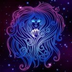
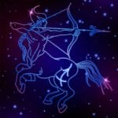
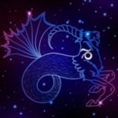

Таблица знаков зодиака
|
Овен |
Телец |
Близнецы |
Рак |
Лев |
Дева |
Весы |
Скорпион |
Стрелец |
Козерог |
Водолей |
Рыбы |
| Символ знака |
 |
 |
|
 |
 |
 |
 |
 |
 |
 |
 |
 |
| Даты знака |
21 марта – 20 апреля |
21 апреля – 20 мая |
21 мая – 21 июня |
22 июня – 22 июля |
23 июля – 23 августа |
24 августа – 23 сентября |
24 сентября – 23 октября |
24 октября – 22 ноября |
23 ноября – 21 декабря |
22 декабря – 20 января |
21 января – 20 февраля |
21 февраля – 20 марта |